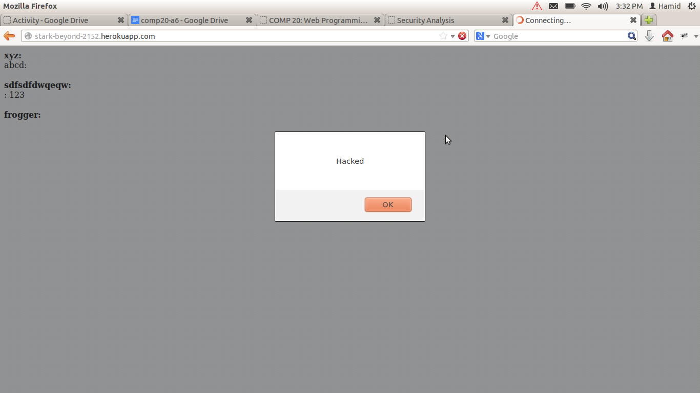

Security Assessment of ScoreCenter
Introduction
I have been hired to provide security analysis of an app created by a fellow comp20 student using node.js with express.js and deployed on heroku. The app is basically a scorecenter where anyone can send data to this app containing a username, score and game title. The app stores the information and displays it on the main page. The app has a '/usersearch' feature which allows users to search for the scores in all the games played by a the username of a particular user. In addition the users can also display the highscores and the usernames with the highscores by using the '/highscores.json' api in the app. I am required to make an assessment of how secure this app is in terms of input validation, user access and any other potential security leaks.
Methodology
The scorecenter app was launched on heroku. My partner provided me with his source code as well. To test the app, I used it as any other user would. My goal was to find as many flaws in the app as possible. To do this, I used methods such as inputting the wrong values, inputting extra items, requesting wrong information, injecting script in the '/usersearch' option, sending false data to '/submit.json', injecting script into the one of the items I sent to '/submit.json' etc. I also went over the source code that my partner provided.
Abstract of Findings
There were a couple of security issues with this app. The major problems that I found were lack of input validation and cross origin resource sharing which means that anyone from any domain can send documents to '/submit.json'. The majority of the issues that I found with the app can be grouped into these two problems.
- Lack of input validation:
- any malicious script can be injected by sending it as input to '/submit.json' and the app has no way of preventing that
- the user can input wrong values such as scores instead of username, wrong game title etc.
- the user can input very large amounts of data and there is no way of stopping that from happening which can potentially overload a database
- Cross Origin Resource Sharing:
- anyone from any domain can send documents to the '/submit.json' api and there is no way to check where the input is coming from and who is sending it
- there is no user verification
Issues Found
- Any malicious script can be sent '/submit.json'
- Location: submit.json, main page ('/')
- Severity: High because any malicious script can be sent which can corrupt the data and stop the app from working
- Description: anyone from any domain can send in the username, highscore and game title to the app at '/submit.json'. This means that malicious code can be injected into the input which can interfere with the application. In the case of this app, I sent a script that made a message box appear on the main page. The script I used was: <script> alert('Hacked');</script>). I have provided a screen shot below of the main page after this script was injected.
- Resolution: The app needs code to check whether the data being received is in the form of script. Also, it would be a good idea to accept incoming data only from registered users.

- Any user can put in any input without any sort of verification
- Location: submit.json, highscores.json
- Severity: High because users can be expected to send in completely wrong data and there is no way of detecting that
- Description: The app has a '/highscores.json' feature which displays the top ten scores for a game. If a user sends something other than a numeric score for the score part of a document, this feature will not be able to work properly as it will not be able to sort the scores in the correct order. In addition, a user may mistakenly enter wrong items in the username, game title and score for '/submit.json' and wrong data will be input into the database
- Resolution: Code can be written to verify that the user sends the correct type of input for all the fields such as a number for score, a string for game title etc.
- Very large amounts of data can be sent to the database which might overload the database
- Location: submit.json, usersearch
- Severity: High because sending a very large amount of data to '/submit.json' can completely overload the mongo database. Also putting in a huge amount of data in the usersearch can mess up the search function
- Description: The user can send a very large amount of data to the submit.json api and that can overload the mongo database used by the app and hence can cause the whole app to stop working. A very large amount of data can be inserted in the usersearch function which can once again stop the app.
- Resolution: There needs to be a limit put in place in the source code of the app on the amount of data it can receive from '/submit.json' and '/usersearch'
- No user verification
- Location: main page ('/'), submit.json, usersearch, highscores.json
- Severity: Medium because anyone can use this app and update its data and request its data without any need for verification which leaves this app wide open for potentially harmful users
- Description: Right now, this app can be used by anyone from any domain. Since Cross Origin Resource Sharings is enabled for this app, anyone can send in data to submit.json. Also anyone can use the usersearch function and the '/highscores.json' api which can once again exposes the app to users who might do harm in ways described above.
- Resolution: Implement a login system so that only trusted and verified users can access the app.
Conclusion
My partner's app had several security leaks. This app cannot be deployed for use because of all the security concerns. I would suggest my partner to incorporate all the resolutions for the problems discussed above. In addition, I would suggest my partner to use the web security analysis tools described in assignment 6 handout. Overall, the code that my partner wrote is relatively clear and concise.